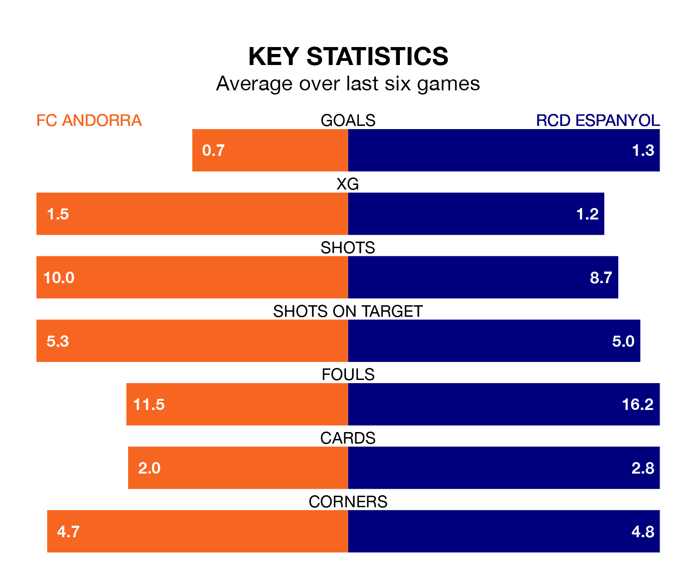

FC Andorra host RCD Espanyol on Saturday at Estadi Nacional in the Segunda División.
In their last league match, on Sunday, Andorra drew with SD Eibar 2-2 away, with goals from Iker Benito and Manuel Nieto Sánchez.
Espanyol also drew, 1-1 at home against Real Zaragoza on December 8, with Edu Expósito scoring their goals.
With 30 goals in 19 games so far this season, Espanyol are the league's third-highest scorers with 1.6 goals per game. And they are conceding fewer than average, letting in 20 goals at a rate of 1.1 per game.
Andorra, meanwhile, are below average scorers, with 0.9 goals per game, compared to a league average of 1.2. They have conceded 1.3 goals per game.
In Javi Puado, RCD Espanyol have one of the league's sharpest shooters so far this season. He has notched nine goals in 15 appearances, to sit second in the scoring charts.
His goal rate of one every 138 minutes is quicker than that of Nieto Sánchez, FC Andorra's top scorer with a goal every 191 minutes, and a total of four goals in 18 games.
The visitors are fourth in the table after 19 games, of which they have won nine and drawn five, earning 32 points.
The home side are 13 places behind Espanyol in 17th, with six wins and four draws putting them on 22 points.
Andorra are in disappointing form in the Segunda División, with one win and three draws from their last six games.
With two wins and three draws over that period, Espanyol's form is better – they have taken nine points from 18, compared to Andorra's six.
